RoboConnect Objects
This details the proccess of combining giving methods to the objects detailed in RoboConnect. They key object to this is the command constructor.
Methods
Connect
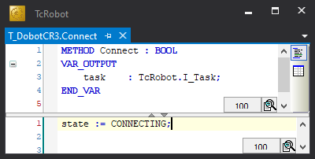
This method moves the state in the CyclicLogic method from "INIT" TO "CONNECTING" which establishes the TCPIP ports.
{kind=link}
CyclicLogic
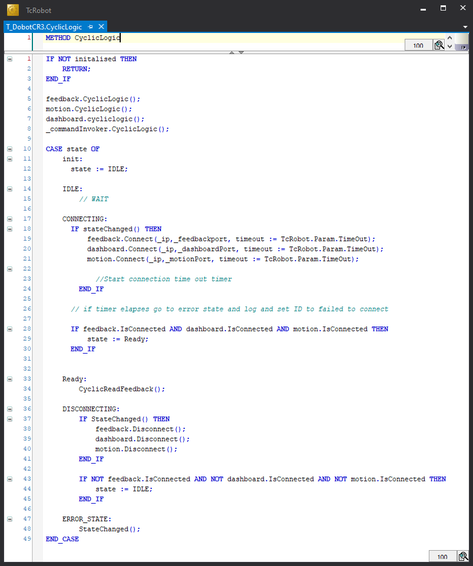
This method is called every cycle and contains a case statement. This case has six states:
{kind=link}
- INIT
- IDLE
- CONNECTING
- READY
- DISCONNECTING
- ERROR_STATE
INIT
This state upon the first cycle will move to IDLE.
IDLE
Waiting for the connect method however until this is called the case will remain in this state.
CONNECTING
On line 18 there is a check if the the state has changed if this is true the three TCPIP ports are set to connect. The time out of the connection is set globally and defaults at 45 seconds (In testing a 5 second time out meant that the connection never suceeded). Before moving onto the next case the connection needs to be tested. Each of the ports is of type T_ConnectionTCPIP which has a property of IsConnected this is inspected on line 28. Moving onto the ready state can only happen when all three ports are connected.
READY
This is the running state the robot is ready to receive commands and the feedback is read. That is what line 34 does, this is a call that receives in the 1440 bytes of feedback from the realtime feedback port.
DISCONNECTING
The if statement on line 37 checks for a change of state then if that returns true each of the ports established in CONNECTING are called to disconnect. Line 43 checks if each of the connections are disconnected before moving to IDLe ready for a connect method call against the robot.
Error_state
This state isn't used.
CyclicReadFeedback
Disable
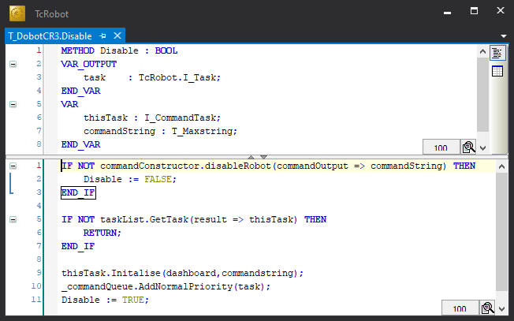
The statement in the if statement populates the variable "commandString" with the string to disable the robot "DisableRobot()". The method returns true if it is successful so if it fails the method T_DobotCR3.Disable returns false as the command wasn't successful. Line 5 retreves a task from the task pool and assigns it to the variable "ThisTask". Line 9 populates the task with the target port for the command and the command string payload. line 10 adds the task to the command queue with a normal priority as this is a standard command. Then the method is set to true.
{kind=link}
Disconnect
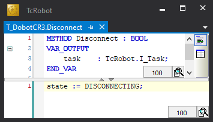
This method moves the state in the CyclicLogic method from "READY" TO "DISCONNECTING" which disconnects the TCPIP ports.
{kind=link}
Enable
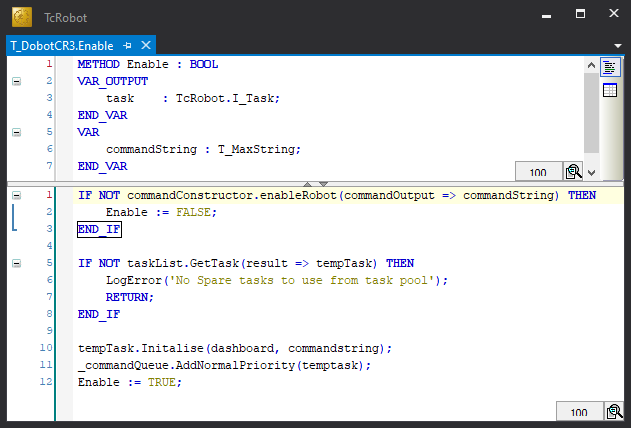
Using the commandConstructor populate the command string with the correct TCPIP string to enable the robot "EnableRobot()". Then gets the next available task from the task list.
Line 10 inialises the task with the correct tcpip port and string.
Line 11 adds the task to the command queue with normal priority.
Line 12 sets the method to true.
{kind=link}
Halt
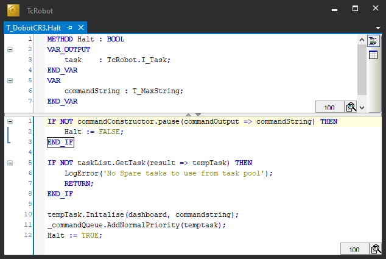
There is no halt command in the Dobot command however the pause() command best meets what halt would do. "Pause the motion commands that are not delivered by project (generally, the motion commands delivered by TCP), without clearing the motion queue.". Taken from the Dobot_TCP_IP documentation.
{kind=link}
JogCartesian
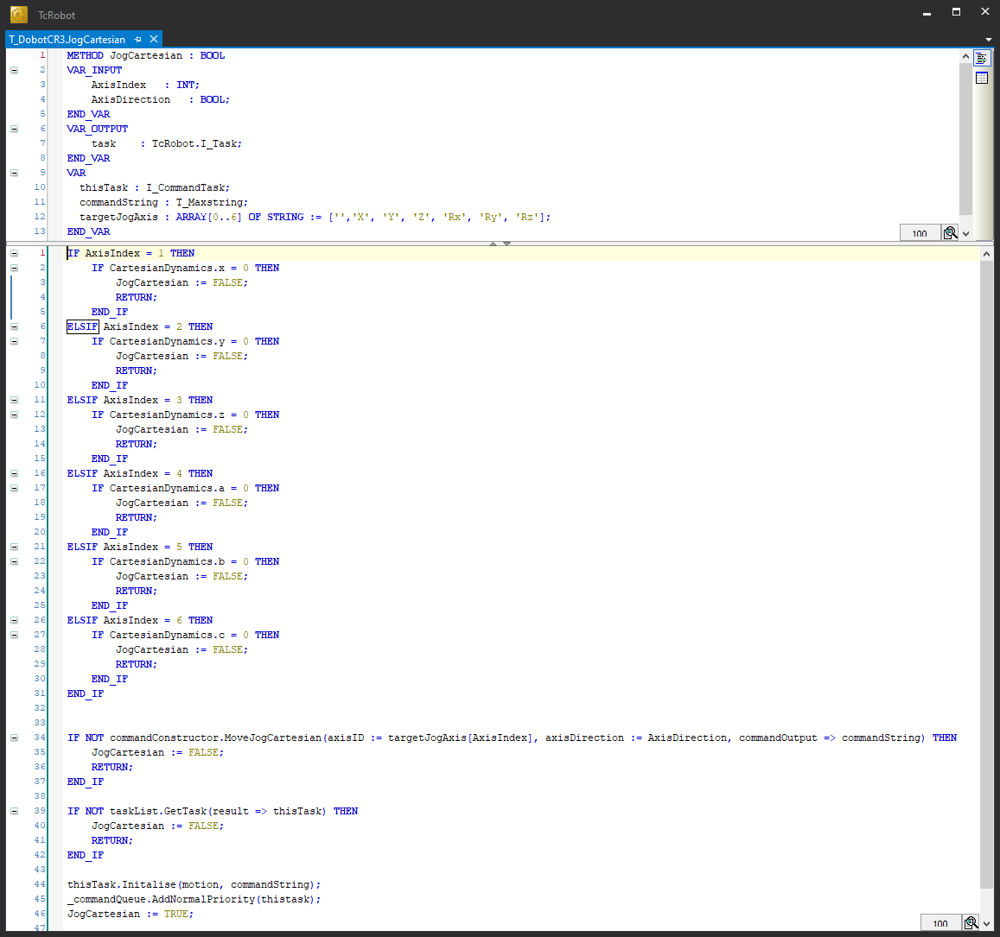
JogCartesian takes in two inputs "AxisIndex" which is an interger value and "AxisDirection" which is a boolean True for positive movement then false for negative movement. You can use the DUT targetJogAxis to input the integer or just the raw int.
{kind=link}
{kind=link}
This method checks against the CartesianDynamics of the robot which holds what cartesian axes a robot can move along. This prevents a robot that doesn't have 6 degrees of freedom from being jogged in an axis that isn't possible.
Line 34 assembles the command string using the command constructor if this is unsuccessful then the method returns false.
Line 39 get's the next task from the task pool if GetTask returns false then JogCartesian is false and the method returns.
Line 44 packs the task with the port the command should go to for this instance it is the motion port as defined in the Dobot documentation.
Line 45 Adds the task to the normal priority queue.
Line 46 returns the method as true.
JogJointAxis
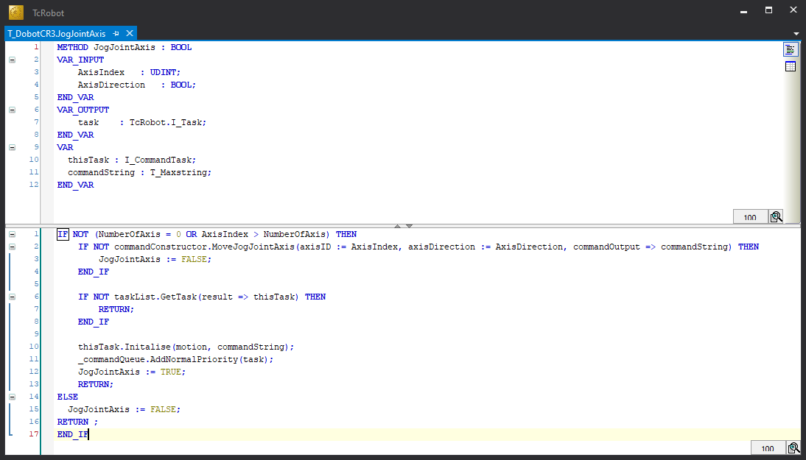
Similar to the JogCartesian method however this is focused on jogging a specific joint, on initalisation the number of Axis is defined. The method takes two inputs "AxisIndex" the target axis number if you want to stop jogging the input is 0. Then the second input is "AxisDirection" that is a boolean true is a positive movement and false is a negative direction of movement.
Line 1 if statement checks that the AxisIndex is within bounds of the robot's axes.
Line 2 assembles the command string using the command constructor if this is unsuccessful then the method returns false.
Line 6 get's the next task from the task pool if GetTask returns false then JogCartesian is false and the method returns.
Line 10 packs the task with the port the command should go to for this instance it is the motion port as defined in the Dobot documentation.
Line 11 Adds the task to the normal priority queue.
Line 12 returns the method as true.
{kind=link}
MoveABS
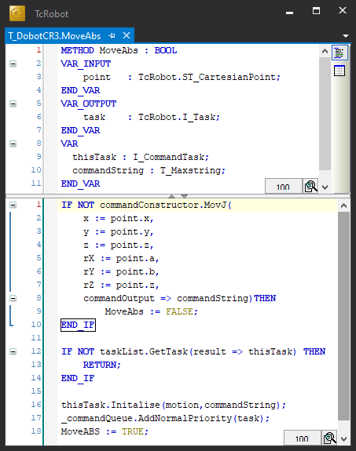
An input of a cartesian point detailing the target point in space for the robot to move toward.
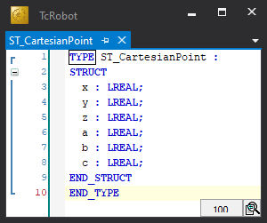
Line 1 uses commandConstructor to assemble the command string from "point".
Line 12 get's the next task from the task pool if GetTask returns false then moveABS is false and the method returns.
Line 16 packs the task with the port the command should go to for this instance it is the motion port as defined in the Dobot documentation.
Line 17 Adds the task to the normal priority queue.
Line 18 returns the method as true.
{kind=link}
{kind=link}
MoveJ
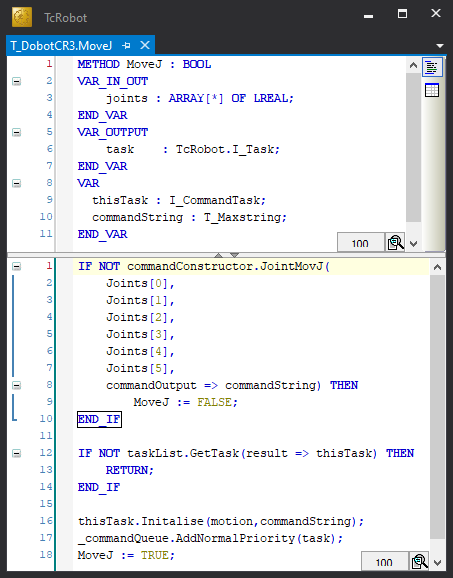
MoveJ takes an input of an array of lreal representing the target joint angles for the robot.
Line 1 uses commandConstructor to assemble the command string from "joints".
Line 12 get's the next task from the task pool if GetTask returns false then Movej is false and the method returns.
Line 16 packs the task with the port the command should go to for this instance it is the motion port as defined in the Dobot documentation.
Line 17 Adds the task to the normal priority queue.
Line 18 returns the method as true.
{kind=link}
Reset
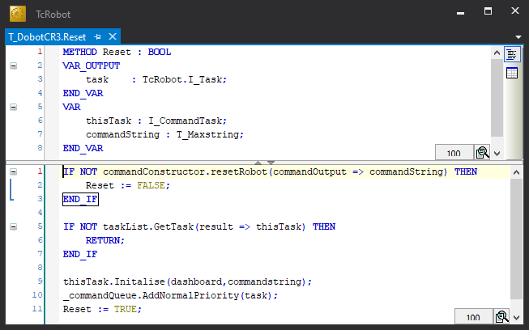
Line 1 uses commandConstructor to assemble the command string.
Line 5 get's the next task from the task pool if GetTask returns false then Reset is false and the method returns.
Line 9 packs the task with the port the command should go to for this instance it is the dashboard port as defined in the Dobot documentation.
Line 10 Adds the task to the normal priority queue.
Line 11 returns the method as true.
{kind=link}
StateChanged
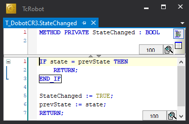
StateChanged uses two states initalised in the CR3 function block specically "Sate" & "prevState" checking if the states changed. The method goes true and the prevState becomes the state.
{kind=link}
Stop
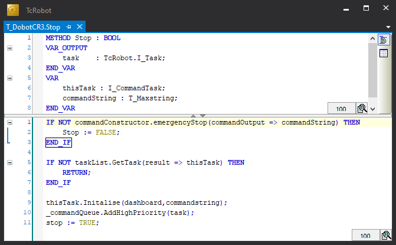
Line 1 uses commandConstructor to assemble the command string.
Line 5 get's the next task from the task pool if GetTask returns false then Reset is false and the method returns.
Line 9 packs the task with the port the command should go to for this instance it is the dashboard port as defined in the Dobot documentation.
Line 10 Adds the task to the high priority queue.
Line 11 returns the method as true.
{kind=link}
Properties
The majority of the properties are read through realtimefeedback port detailed in the Dobot TCP/IP Remote Control Interface Guide.
Busy
Busy is a boolean.
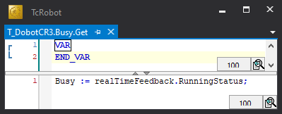
The running status flag is asigned to the value of the busy property.
{kind=link}
Connected
Connected is a boolean.
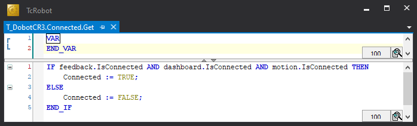
Connected reads the is connected properties on the three TCP/IP ports if they are all true then all three of the ports are connected then the robot is connected. However if one of these ports are not connected the robot is classified as not connected.
{kind=link}
Done
Done is a boolean.
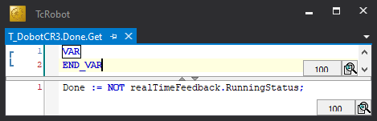
In the TCP/IP documents there is no done command however if the robot isn't running then it is done. So for done is the inverse of the runningstatus.
{kind=link}
Enabled
Enabled is a boolean.
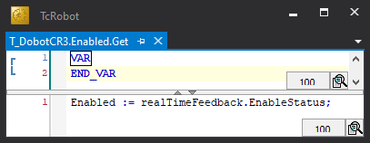
There is an enabled status on the feedback port for the robot, this is the value given to the enabled property.
{kind=link}
Error
Error is a boolean.
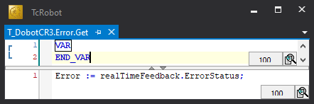
There is an error flag on the feedback port so that is the value given to the Error property.
{kind=link}
ErrorID
ErrorID is a lreal.
There is an error code that is provided as an echo to a command string however currently not fed back to this property.
| Error Code | Description | Note |
|---|---|---|
| 0 | No error | Deliver successfully |
| -1 | Failed to get | Failed to receive or execute |
| -10000 | Command Error | The command does not exist |
| -20000 | Parameter number error | The number of parameters in the command is incorrect. |
| -30001 | The type of the first parameter is incorrect. | -30000 indicates that the parameter type is incorrect. The last bit 1 indicates that the type of the first parameter is incorrect |
| -40001 | The range of the first parameter is incorrect | -40000 indicates the parameter range is incorrect. The last bit 1 indicates that the range of the first parameter is in correct. |
Position
Position is type ST_CartesianPoint.
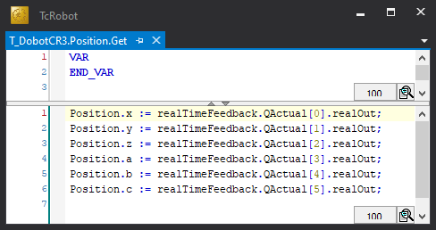
QActual represents the actual joint position of the robot
{kind=link}
ToolPosition
ToolPosition is type ST_CartesianPoint.
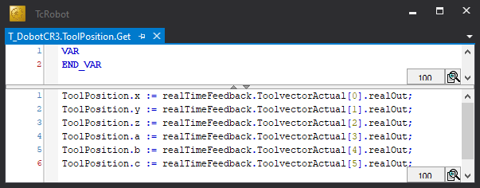
ToolVectorActual represents the Tool Center Point (TCP) actual Cartesian coordinates. The method aligns the raw array of values to indexable cartesian axes.
{kind=link}
Gets
GetAnalogOutput
GetAxisCurrents
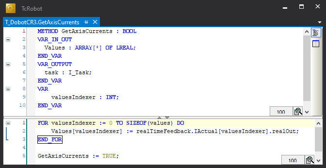
"Values" is a unkown length of the array as this allows for various robots with a wide spectrum of joints. This method access the Iactual values from the realtime feedback port, the for loop indexes through the array and populates the "Values" array with currents of the joints.
{kind=link}
GetAxisPositions
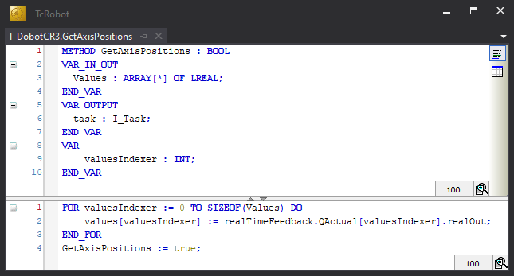
"Values" is a unkown length of the array as this allows for various robots with a wide spectrum of joints. This method access the QActual values from the realtime feedback port, the for loop indexes through the array and poplates the "Values" array with the joint positional values.
{kind=link}
GetAxisTemperatures
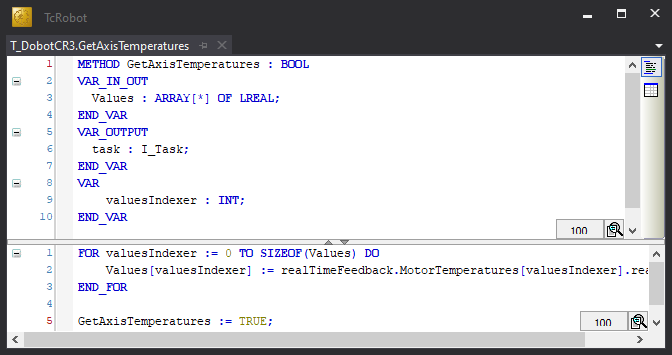
"Values" is a unkown length of the array as this allows for various robots with a wide spectrum of joints. This method access the MotorTemperatures values from the realtime feedback port, the for loop indexes through the array and poplates the "Values" array with the temperature of the axis.
{kind=link}
GetDigitalOutput
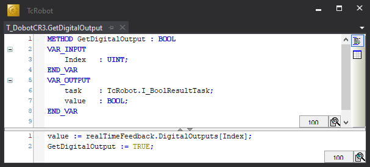
Using the "index" which response to the target digital output for return. The target value is given value thorugh the realTimeFeedback port and the variable DigitalOutput with the index.
{kind=link}
GetToolAnalogOutput
GetToolDigitalOutput
Sets
SetAnalogOutput
| Input Variable | Data Type | Representative value |
|---|---|---|
| Index | UINT | Target output terminal |
| Value | LREAL | Value of target output terminal |
{kind=link}
The if statement on line 1 populates the commandOutput with the correct string using the commandConstructor.
Line 5 populates the task with a task that is available from the task pool.
Line 9 initalises the task with the dashboard port and the command string.
Line 10 adds the task with normal priority to the command Queue.
Line 11 sets the Method true.
SetBufferMode
SetCartesianAcceleration
| Input Variable | Data Type | Representative value |
|---|---|---|
| Acceleration | LREAL | The acceleration ratio with the range 1 to 100 |
{kind=link}
Line 1 populates the command string with the correct string for setting the cartesian acceleration. Due to the interface specificying an LREAL there is a type conversion between LREAL to INT.
Line 5 populates the task with a task that is available from the task pool.
Line 9 initalises the task with the dashboard port and the command string.
Line 10 adds the task with normal priority to the command Queue.
Line 11 sets the Method true.
SetCartesianDynamics
This method is part of the robot set up, it defines how the robot can move in cartesian space. It can restrict the jog movement by setting one of the dynamics to false.
| Input Variable | Data Type | Representative value |
|---|---|---|
| XDynamics | BOOL | If the robot can move in the X axis |
| YDynamics | BOOL | If the robot can move in the Y axis |
| ZDynamics | BOOL | If the robot can move in the Z axis |
| ADynamics | BOOL | If the robot can move in the A axis |
| BDynamics | BOOL | If the robot can move in the B axis |
| CDynamics | BOOL | If the robot can move in the C axis |
{kind=link}
Line 1 creates a copy of how the cartesian dynamics was before the dynamics are set. This is used to check if dynamics have been set from the default
Lines 2 to 37 inspects each variable input and sets the dynamics of the robot, if a dynamics is true then the cartesian point is set to 1 and visa versa.
Lines 38 to 46 uses the "orginalCartesianDynamics" to check if they match then the do then robot isn't inisalised as the robot can't move on any axis.
If the condition of the line 38 is true, sets the method to be true and marks that the CartesianDynamicsInitalisation to true.
SetCartesianSpeed
| Input Variable | Data Type | Representative value |
|---|---|---|
| Speed | LREAL | The speed ratio with the range 1 to 100 |
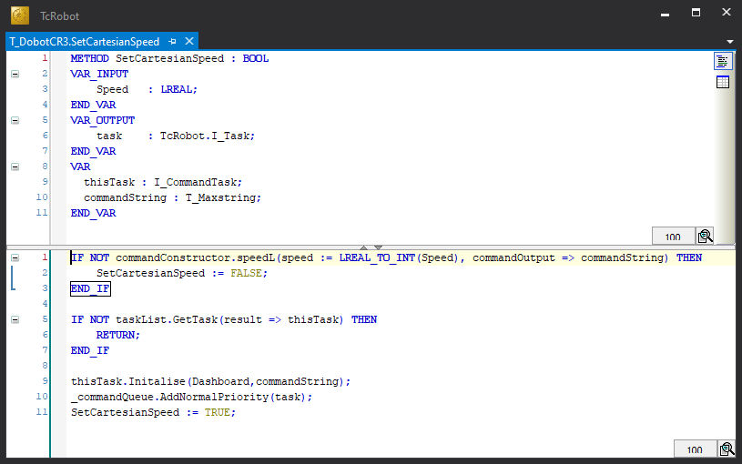
Line 1 populates the command string with the correct string for setting the cartesian speed. Due to the interface specificying an LREAL there is a type conversion between LREAL to INT.
Line 5 populates the task with a task that is available from the task pool.
Line 9 initalises the task with the dashboard port and the command string.
Line 10 adds the task with normal priority to the command Queue.
Line 11 sets the Method true.
{kind=link}
SetConnectionProperties
| Input Variable | Data Type | Representative value |
|---|---|---|
| IP | T_MaxString | The ip address of the robotic controller. |
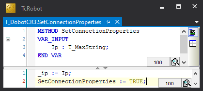
Sets the Ip address of the robot within the object, this "_IP" and it is used in the "connect" method.
{kind=link}
SetDigitalOutput
| Input Variable | Data Type | Representative value |
|---|---|---|
| Index | UINT | Target output terminal |
| Value | BOOL | Value of target output terminal |
{kind=link}
The if statement on line 1 populates the commandOutput with the correct string using the commandConstructor.
Line 5 populates the task with a task that is available from the task pool.
Line 9 initalises the task with the dashboard port and the command string.
Line 10 adds the task with normal priority to the command Queue.
Line 11 sets the Method true.
SetJogType
SetJointAcceleration
| Input Variable | Data Type | Representative value |
|---|---|---|
| Acceleration | LREAL | The acceleration ratio with the range 1 to 100 |
{kind=link}
Line 1 populates the command string with the correct string for setting the joint acceleration. Due to the interface specificying an LREAL there is a type conversion between LREAL to INT.
Line 5 populates the task with a task that is available from the task pool.
Line 9 initalises the task with the dashboard port and the command string.
Line 10 adds the task with normal priority to the command Queue.
Line 11 sets the Method true.
SetJointSpeed
| Input Variable | Data Type | Representative value |
|---|---|---|
| Acceleration | LREAL | The acceleration ratio with the range 1 to 100 |
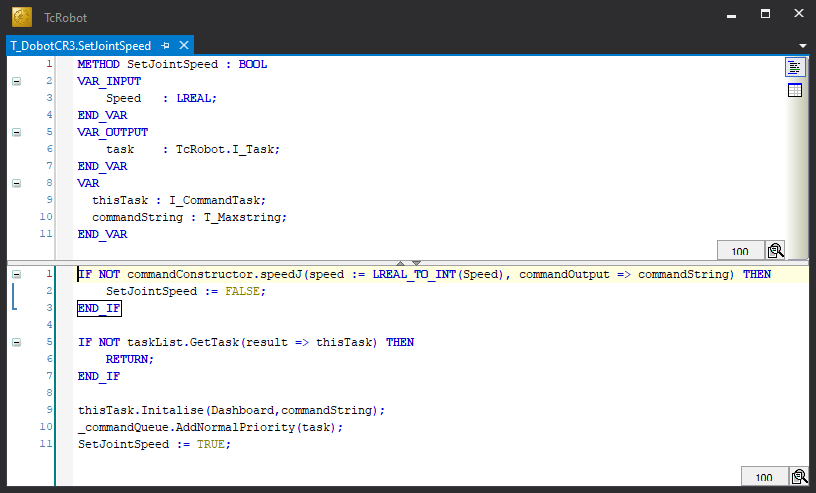
Line 1 populates the command string with the correct string for setting the joint speed. Due to the interface specificying an LREAL there is a type conversion between LREAL to INT.
Line 5 populates the task with a task that is available from the task pool.
Line 9 initalises the task with the dashboard port and the command string.
Line 10 adds the task with normal priority to the command Queue.
Line 11 sets the Method true.
{kind=link}
SetNumberOfAxis
| Input Variable | Data Type | Representative value |
|---|---|---|
| NumberOfAxisOfMovement | UDINT | Number of axis of movement that the robotic system has. |
{kind=link}
This method checks if the robot is initalised, if the robot is not initalised then this method sets the number of axes on the robot. This method also sets the "NumberOfAxisInitalisation" to true. Then sets the method to true.
SetToolAnalogOutput
SetToolDigitalOutput
| Input Variable | Data Type | Representative value |
|---|---|---|
| Index | UINT | Target output terminal |
| Value | BOOL | Value of target output terminal |
{kind=link}
The if statement on line 1 populates the commandOutput with the correct string using the commandConstructor. Due to the interface specificying an BOOL for value there is a type conversion between BOOL to INT.
Line 5 populates the task with a task that is available from the task pool.
Line 9 initalises the task with the dashboard port and the command string.
Line 10 adds the task with normal priority to the command Queue.
Line 11 sets the Method true.
SetToolFrame
| Input Variable | Data Type | Representative value |
|---|---|---|
| Frame | RoboConnect.ST_CartesianPoint | This data type holds all the cartesian points x,y,c,a,b,c |
{kind=link}
Lines 1 to 6 populates the "TableString" with the vaules of the tool frame from the input "Frame". Using the populated table string line 7 populates the command output with the desired string. The index always remains 1 as any stored tool frames can be stored in PLC code for application such as tool changes.
Line 7 populates the task with a task that is available from the task pool.
Line 15 initalises the task with the dashboard port and the command string.
Line 16 adds the task with normal priority to the command Queue.
Line 17 sets the Method true.
SetTransitionMode
SetTransitionParameter
| Input Variable | Data Type | Representative value |
|---|---|---|
| CPratio | LREAL | The ratio of how accurate the robot path will be when passing through an intermediate point. [1 to 100] |
{kind=link}
Line 1 Check if the cpRatio is within the bounds of the accepted range, if it is then the method continues.
Line 2 populates the command string with the correct command string using the commandConstructor.
Line 6 populates the task with a task that is available from the task pool.
Line 10 initalises the task with the dashboard port and the command string.
Line 11 adds the task with normal priority to the command Queue.
Line 12 sets the Method true.
SetUserFrame
| Input Variable | Data Type | Representative value |
|---|---|---|
| Frame | RoboConnect.ST_CartesianPoint | This data type holds all the cartesian points x,y,c,a,b,c |
{kind=link}
Lines 1 to 6 populates the "TableString" with the vaules of the tool frame from the input "Frame". Using the populated table string line 7 populates the command output with the desired string. The index always remains 1 as any stored tool frames can be stored in PLC code for application such as tool changes.
Line 7 populates the task with a task that is available from the task pool.
Line 15 initalises the task with the dashboard port and the command string.
Line 16 adds the task with normal priority to the command Queue.
Line 17 sets the Method true.